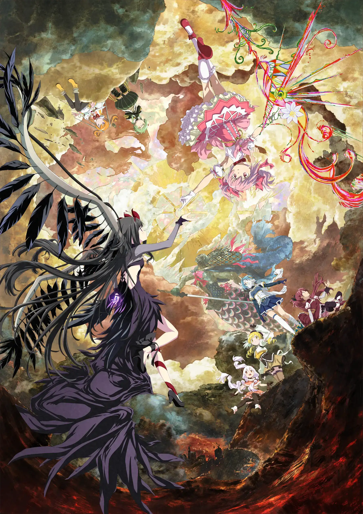
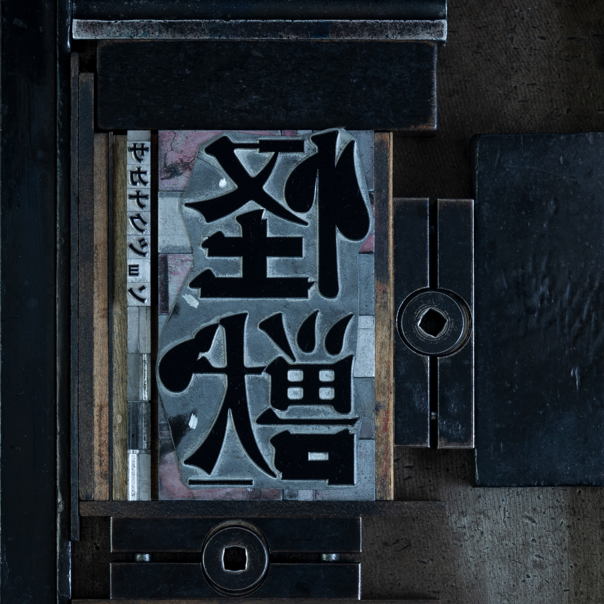

Jun 2026 - Present
A visual novel engine with an Electron editor shell and C++ core, used to create my game The Door at Seven. Development of the editor and runtime continues.
Computer science × Physics
Music starts automatically when allowed. If it stays silent, press play below. You can close this panel while listening.
834.194 · sakanaction · Full track · Loop enabled
I build games, developer tools, and simulation projects, with a focus on game programming, algorithms, and computer systems.
Hi, I'm Hongyi.
Computer Science × Physics at Northeastern University · Expected May 2027
Jun 2026 - Present
A visual novel engine with an Electron editor shell and C++ core, used to create my game The Door at Seven. Development of the editor and runtime continues.
Available on itch.io
A visual novel I created with my own Scratch Novel Engine, bringing the engine into a narrative game. Visit the itch.io page to explore the game.
May 2026 - Oct 2026
Set up the mod development environment and completed card art replacement and text configuration. Now building a playable character with base settings, a starter deck, and exclusive cards.
Jan 2026 - Apr 2026
Built longitudinal and lateral dynamics models to study drag, downforce, and tire grip; implemented simplified 2D CFD using the Navier-Stokes equations and FVM; then analyzed CL-CD trade-offs and optimized aero setups with a lap-time model.
Oct 2025 - Present
A 2D side-scrolling platform game where players use scattered clues to solve puzzles. It includes multiple minigames and integrates broad worldbuilding with gameplay.
Feb 2026
Built a playable game in 48 hours around the theme “Mask.” Designed mask mechanics with state transitions and visual feedback while collaborating through Git in a fast-paced team.

Puella Magi Madoka Magica the Movie: Walpurgisnacht Rising
Kaijusakanaction
I am pursuing a bachelor's degree in Computer Science and Physics at Northeastern University in Boston and expect to graduate in May 2027. I focus on game development and software engineering, working primarily with C++, C#, and Python. I love games and anime—feel free to get in touch!